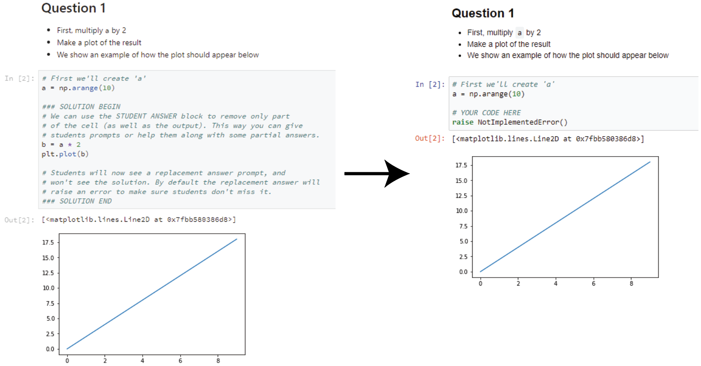

nbclean¶
A collection of tools to preprocess, modify, and otherwise clean up Jupyter Notebooks.

Usage¶
You can use nbclean to “clean up” Jupyter notebooks, including:
- Clear cell outputs, cell content, or components of cell outputs.
- Replace text in cells with new text of your choosing.
- Filter the above operations by the presence of cell tags.
The primary feature of nbclean is the NotebookCleaner class, which performs
the above actions on a notebook according to tags that are in each cell’s
metadata.
# Clear different parts of the notebook cells based on tags
ntbk = nbc.NotebookCleaner(path_notebook)
ntbk.clear(kind='output', tag='hide_output')
ntbk.clear(kind='content', tag='hide_content')
ntbk.clear(kind=['stderr'], tag='hide_stderr')
# Removing entire cells
ntbk.remove_cells(tag='remove')
ntbk.remove_cells(tag='remove_if_empty', empty=True)
ntbk.remove_cells(search_text="# HIDDEN")
# Replacing text
text_replace_begin = '### SOLUTION BEGIN'
text_replace_end = '### SOLUTION END'
ntbk.replace_text(text_replace_begin, text_replace_end)
ntbk.save(path_notebook_cleaned)
Example¶
For an example, the following two notebooks show off nbclean’s functionality:
- this is a sample notebook that has a number of
cells marked-up with
nbcleansyntax. - this notebook uses nbclean to clean up the notebook above..
Additionally, you can give it a try yourself by clicking the Binder button below:

Developers¶
You can find the source repository for nbclean here.